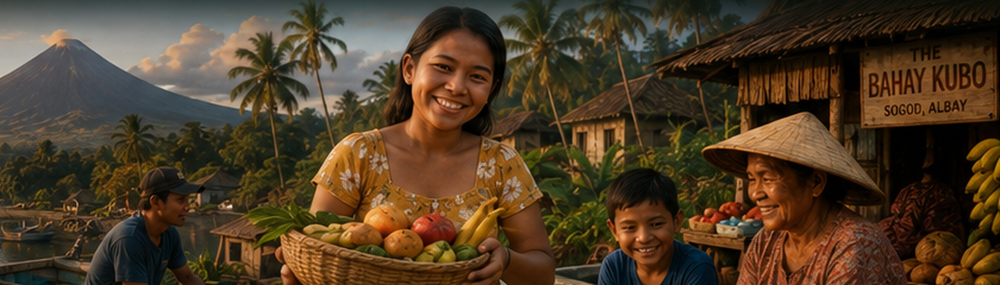

DISCOVER THE PHILIPPINES
7,641 islands. One extraordinary country.
A Southeast Asian archipelago shaped by the sea, centuries
of history and more than 112 million people. Warm smiles,
regional cultures, extraordinary nature and a country with
much more to discover than its famous beaches.
🇵🇭
Republic of the Philippines
An independent republic in Southeast Asia.
🏝️
7,641 islands
Grouped broadly around Luzon, Visayas and Mindanao.
👥
112.7 million people
Official 2024 census population: 112,729,484.
💬
Filipino & English
Official languages alongside important regional languages.
₱
Philippine Peso
PHP · the national currency.
🌏
Southeast Asia
An archipelago in the western Pacific region.
BAYANIHAN
There is a word for the spirit behind it.
Bayanihan is commonly associated with communities
helping one another. Its best-known traditional image is
neighbors working together to move a family's bahay kubo,
or nipa house.
Today, the idea lives on.
Cooperation, generosity and community support remain
an important part of how many Filipinos understand
helping one another.
A COUNTRY OF MANY CULTURES
One nation. Many identities.
The Philippines is not one single culture repeated across
thousands of islands. Regions have their own languages,
dishes, stories, festivals and rhythms of everyday life.
LUZON
The country's largest island group and home to Manila.
BICOL
Volcanoes, coconut-rich food, coastlines and strong regional identity.
ALBAY
Home of Mayon Volcano and extraordinary landscapes.
SOGOD
Where the Philippines becomes personal for our guests.
🍽️
Boodle Fight
A communal feast arranged on banana leaves and shared kamayan-style.
Discover Boodle Fight →
🎉
Fiestas
Communities throughout the country celebrate patron saints, local history, harvests and identity.
🚐
Jeepney culture
Public transport transformed into one of the country's most recognizable pieces of rolling folk art.
Discover the Jeepney →
🌶️
Filipino food
Adobo, pancit, seafood, regional dishes — and in Bicol, coconut milk and chilli.
Taste Bicol →
🤝
Hospitality
Sometimes the experiences people remember most are not attractions at all.
MONEY & EVERYDAY LIFE
Learn to think in pesos.
₱ PHP
The Philippine peso is the local currency. Understanding
what everyday amounts feel like makes markets, transport
and local travel much easier.
- Carry smaller notes for local transport and markets.
- Compare ATM and home-bank fees before withdrawing.
- Look at what the recipient actually receives when sending money.
Open Money & Currency Guide
A COUNTRY OF CONTRASTS
Beautiful. Energetic. Contrasting.
The Philippines includes dense modern business districts,
agricultural provinces, fishing communities, island resorts
and fast-growing cities. Impressive economic progress and
opportunity exist alongside communities where household
incomes remain modest.
That contrast is part of understanding the country properly:
it is neither a postcard paradise nor a single economic story.
It is a large, complex society changing quickly.
💻
Global services & BPO
~US$40B
2025 BPO revenue referenced by Philippine economic authorities — a major global services industry.
🌍
Overseas Filipinos
US$35.6B
Cash remittances in 2025 illustrate the country's powerful connections to the global Filipino workforce.
🗣️
Language advantage
Filipino and English are official languages, making communication unusually accessible for many international visitors and businesses.
🌋
Natural wealth
Volcanoes, fertile land, extensive coastlines, marine environments and geothermal resources create both beauty and economic potential.
🏝️
Tourism beyond the famous names
With 7,641 islands, many extraordinary destinations remain far less internationally visited than Boracay, Palawan or Cebu.
🚀
Digital opportunity
Technology, fintech, remote services and online businesses continue to create new opportunities across the country.
FROM MEGACITY TO VOLCANO
Follow the Philippines until it becomes personal.
A trip does not have to stop in Manila or at a famous resort.
Travel deeper and the country changes every few hours.
01 · MANILA
Metropolitan energy
Business districts, history, neighborhoods and one of Asia's largest urban regions.
02 · LUZON
Beyond the capital
Mountains, farmland, coastlines and provinces with completely different identities.
03 · BICOL
Volcano country
Mayon, coconut-rich food, islands, adventure and a strong regional culture.
04 · ALBAY
Home of Mayon
A province where the volcano is part of the landscape and everyday life.
05 · SOGOD
And then it gets personal.
Meet people, eat locally, explore slowly and experience the place from a local base.
WHY VISIT DIFFERENTLY?
You can see the Philippines — or you can feel it.
A resort can be wonderful. But the country becomes much
more interesting when you also step outside it.
🍲 Eat where locals eat
🚐 Ride a jeepney
🛺 Take a tricycle
🧺 Visit a market
🍽️ Share a meal
🏘️ Explore everyday communities respectfully
🏍️ Ride an ATV toward Mayon
🏝️ Find beaches away from the crowds
💬 Talk to people
🌴 Stay long enough to slow down
Facts & context:
The Department of Tourism states that the Philippines has 7,641 islands.
The Philippine Statistics Authority's official 2024 census counted
112,729,484 people. Article XIV of the 1987 Constitution identifies
Filipino and English as official languages for communication and instruction.
2025 BPO and remittance figures are based on Bangko Sentral ng Pilipinas
economic materials. Figures may be updated as new official statistics are released.
Sources:
Department of Tourism ·
Philippine Statistics Authority ·
1987 Constitution ·
Bangko Sentral ng Pilipinas
THE PHILIPPINES WE WANT TO SHOW YOU
Don't just arrive in the Philippines. Get to know it.
Come for Mayon, beaches and adventure. Stay for the people,
food, conversations and small moments that never make it onto
a standard tour itinerary.
Experience the real Philippines